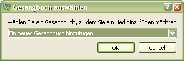

3.1 Hinzufügen eines neuen Liedes
Neues Lied hinzufügen:
Neue Lieder kann man nur in diesem Reiter hinzufügen "Lieder" Reiter.
Abkürzung: Crtl+N
 Wählen Sie ein Gesangbuch oder erstellen Sie ein neues, in das Sie ein Lied hinzufügen möchten. Ausführlicher
über Hinzufügen eines neuen Gesangbuches, siehe
"Gesangbuch hinzufügen" und über das ändern der Lieder hier .
SoftProjector gibt eine Nummer automatisch ein.
Auf Wunsch kann man die Nummer, die mit dem Programm eingegeben worden ist, ändern.
Alle Lieder müssen ihren Namen haben! Alle nicht alphabetisch-nummerische
Zeichen werden aus der Bezeichnung entfernt! Dies ist für eine normale Arbeit der Suche/Filter-Funktion erforderlich.
"Dichter" ein.
"Komponist" ein.
ein.
Der Text muss richtig formatiert werden, um Abstürze in dem Programm zu vermeiden, und dass der Text auf die Leinwand richtig übertragen wird. Siehe
Lied formatieren
Falls Sie nicht wünschen die Änderungen zu speichern, so drücken Sie "Abbrechen" Knopf.
Nach dem Drücken des "Speichern" Knopfes, dauert es einige Sekunden, bis das Lied in die Datenbank geladen wird.